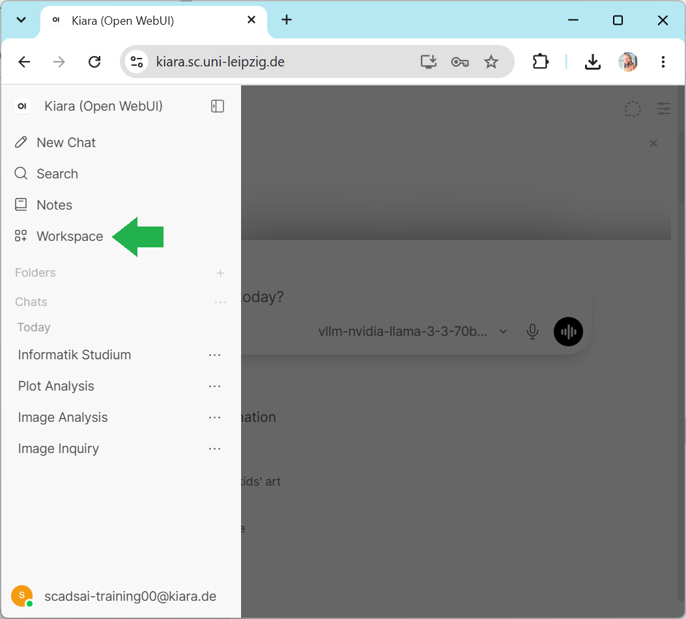
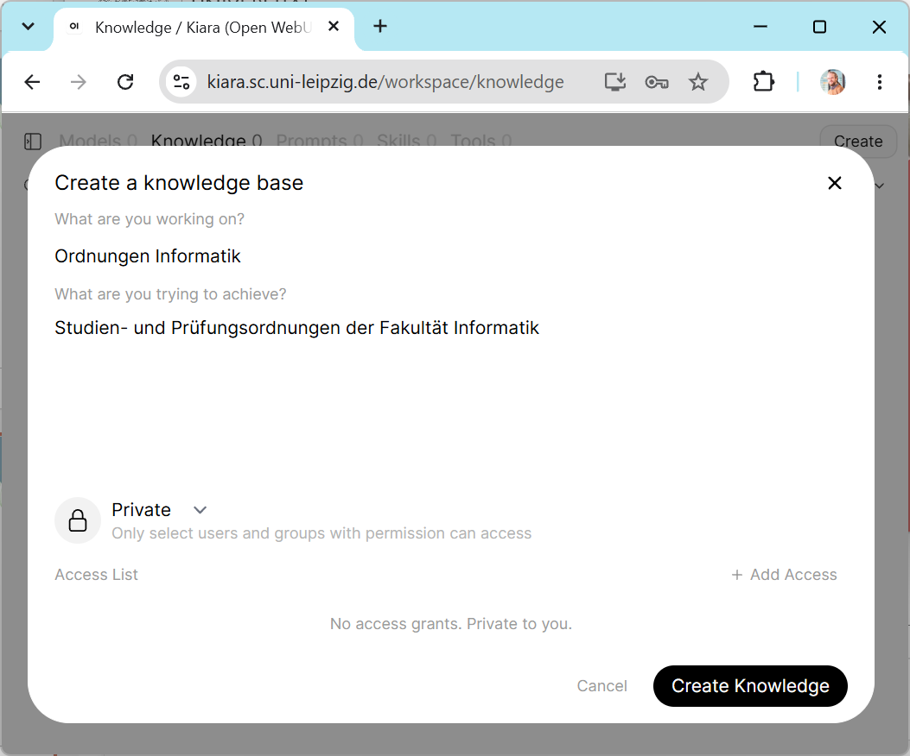
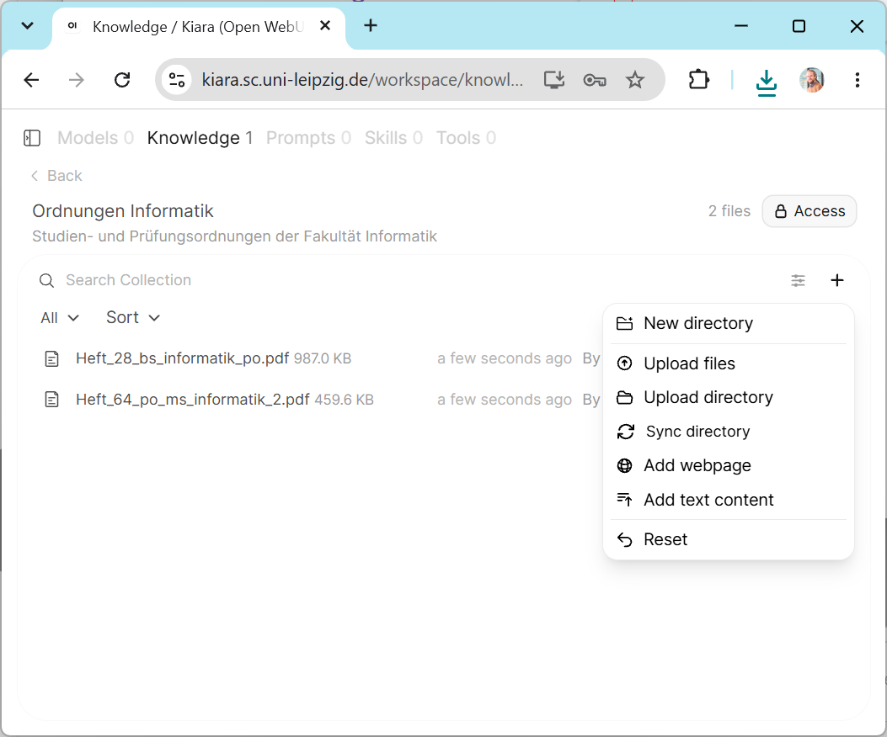
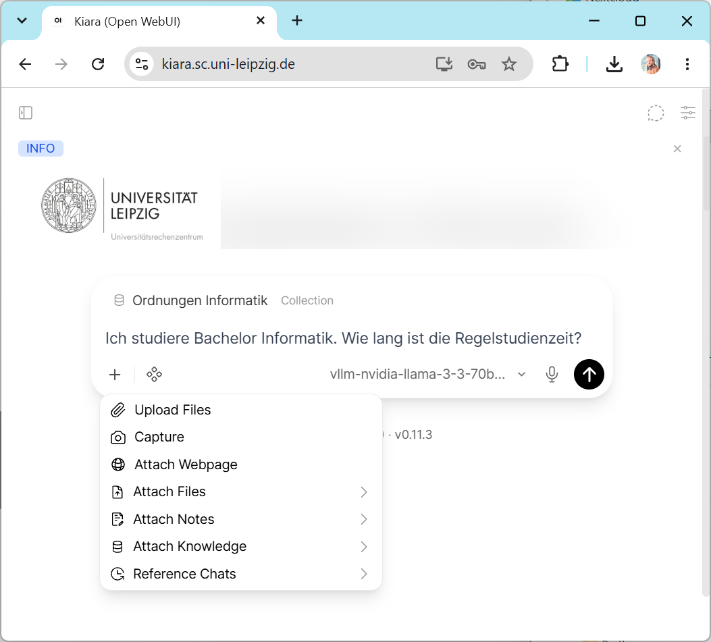
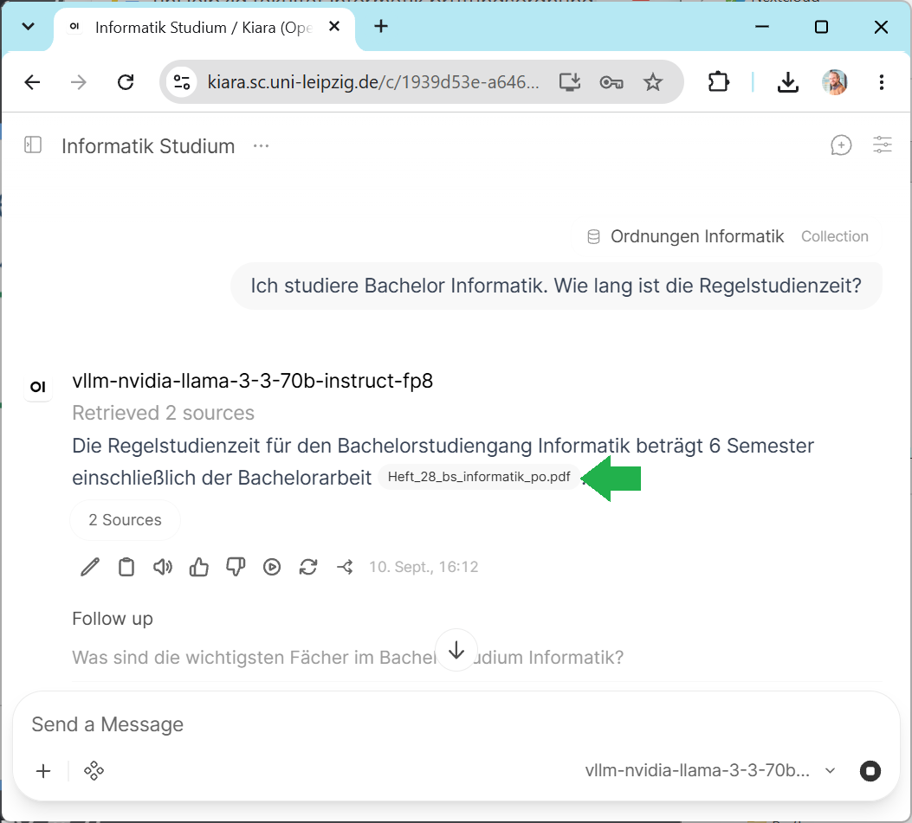
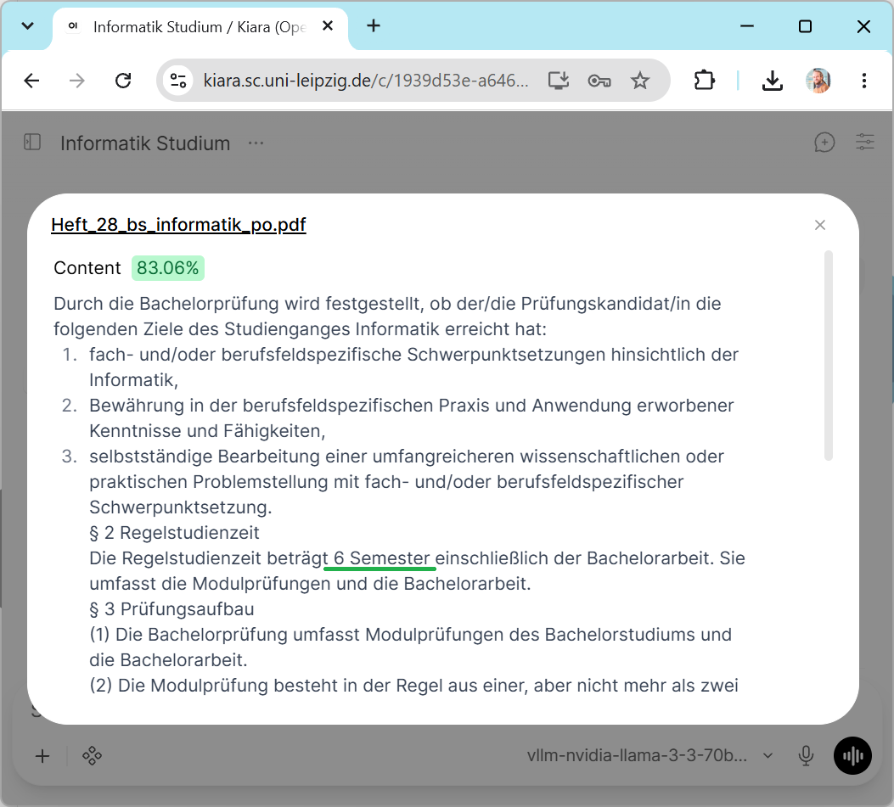

Erstellen eines eigenen Chatbots#
In dieser Übung werden wir einen Chatbot so instruieren, dass das System Fragen bezüglich eines bestimmten Themas beantworten kann. Wir können dann das System mit vorhandenen Chatbots zum gleichen Thema vergleichen.
In einer erweiterten Aufgabenstellung (siehe unten) erstellen wir eine Wissensbasis mit deren Hilfe andere Fragen zu useren Dokumenten stellen können.
Die Aufgabe#
Schreiben Sie einen System-Prompt wie unten beschrieben und starten Sie einen Chat. Fügen Sie diesen ggf. sehr langen Prompt als erste Nachricht ein.
Anschließend können Sie Fragen aus dem gegebenen Kontext stellen und verifizieren, ob die Antwort tatsächlich aus der gegebenen Wissensbasis generiert wurde. Fragen Sie auch nach Themen außerhalb des Themengebiets: Kann der auf Gute Wissenschaftliche Praxis spezialisierte Chatbot Kochrezepte schreiben? Kann ein Chatbot, der auf Datenmanagementpläne spezialisiert ist, auch Auskunft zu regionalen Ausflugszielen geben?
Gruppenarbeit#
Wenn Sie in einer Gruppe arbeiten, schreiben Sie den Systemprompt in einem gemeinsamen Dokument, bspw. in der Speicherwolke der Universität Leipzig oder bei Google Docs.
So geht’s#
Damit der Chatbot als Experte in einer Domäne agieren kann, braucht das System entsprechende Instruktionen und detaillierte Informationen, eine Wissensbasis.
Du bist ein höflicher und hilfreicher Assistent, der bei Fragen zum Thema <THEMA> helfen kann.
Du hast folgende Informationen zur Verfügung:
<INFORMATIONEN>
# Dein Task
Antworte auf alle Fragen AUSSCHLIESSLICH mit den gegebenen Informationen.
Wenn die Antwort auf eine Frage nicht in den Informationen oben gegeben ist, antworte höflich,
dass Du die Antwort nicht kennst und verweise auf die Email-Adresse der Beratungsstelle: <EMAIL>
Kopieren Sie diesen Prompt in ein geteiltes Dokument und ersetzen Sie die <PLATZHALTER> durch konkreten Text. Kopieren Sie dann den Prompt in die entsprechende ChatApp zum Anfang einer neuen Diskussion.
Themen#
Für diese Übung stehen verschiedene Themen zur Auswahl.
Nutzung von Generativer KI
Leitlinien zur Sicherung guter wissenschaftlicher Praxis
Checkliste zum Umgang mit Forschungsdaten
Verordnung des Sächsischen Staatsministeriums für Wissenschaft, Kultur und Tourismus über die Vergabe von Sächsischen Landesstipendien
Wenn Sie eigene, geeignete Dokumente für andere Themen haben, nutzen Sie diese gerne. Sie können auch ein großes, kommerzielles Sprachmodel nutzen um eine Wissensbasis zu erzeugen (Wissensdestillation).
Hinweise#
Erweitern Sie den Prompt durch weitere Instruktionen, wie beispielsweise:
Du bist Juristin mit Spezialgebiet <THEMA> und antwortest in für Juristen typischer Sprache.Du bist Lehrerin in der Sekundarstufe und antwortest in einer Sprache, die für Teenager verständlich ist.Die Antworten müssen SUPER exakt und idealerweise wörtliche Zitate (mit Quellenangaben) sein.Es ist SUPER SUPER WICHTIG, dass die Antworten korrekt sind. Wenn ich hier was falsch mache, werde ich entlassen.
Ändern Sie die Perspektive der Diskussion. Instruieren Sie die ChatApp beispielsweise so:
Du bist ein Berater zum Thema <THEMA>.
Wir müssen ein <DOKUMENT> erstellen.
Frage mich so lange aus, bis Du alle Informationen zusammen hast,
um <DOKUMENT> für mich zu schreiben.
Erweiterte Aufgabe#
Speichern Sie die Wissensbasis als PDF ab, oder nutzen Sie offizielle Dokumente der Universität wie bspw. die Prüfungsordnung des Bachelorstudiengangs Informatik oder des Masterstudiengangs Informatik. Laden Sie sie als Wissensbasis hoch. In KIARA klicken Sie dazu zuerst auf Workspace:

Geben Sie Ihrer Wissensbasis einen griffigen Namen und eine Beschreibung. Je genauer sie hier spezifizieren, was in der Wissensbasis steckt, desto wahrscheinlicher findet die KI später relevante Informationen.

Laden Sie die Dokumente der Wissensbasis hoch:

Starten Sie einen neuen Chat und fragen Sie eine Frage deren Antwort Sie mithilfe der PDFs selbst verifizeren können. Beispiel: “Ich studiere Bachelor Informatik. Wie lang ist die Regelstudienzeit?”

Klicken Sie auf die Quellenangabe um die zitierten Quellen anzuzeigen.

Überprüfen Sie ob die Kerninformation tatsächlich in den zitierten Quellen angegeben ist.
